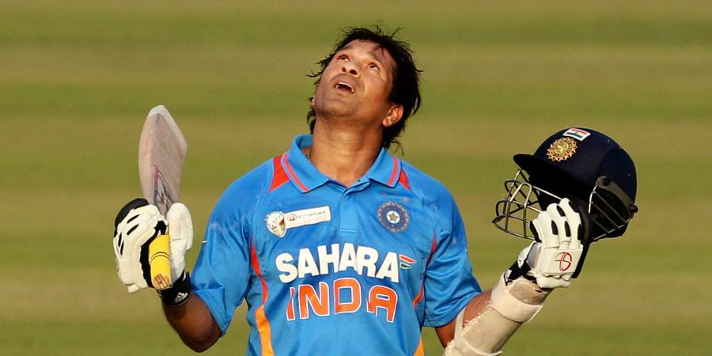

He is a former Indian cricketer. He has the highest number of runs in both Test cricket and One Day Internationals.
He also has the highest number of centuries in both formats of the game
Here is a Timeline of Sachin Tendulker's Life:
April 24, 1973-Born in Mumbai
December 11, 1988 - Truly first-class debut -
At 15, scores an unbeaten century against Gujarat at the Wankhede Stadium to become the youngest Indian to make a hundred on first-class debut. Was picked after Bombay captain Dilip Vengsarkar watched him negotiate Kapil Dev in the nets.
December 14, 1989 -
Bloody-minded to start with-
On the last day of the last Test of his first Test series, in Sialkot, gets hit on the nose by Waqar Younis - also in his first series. Falls down, gets up, and wipes away the gushing blood. Medical assistance is declined. Is eventually out for 57
August 14, 1990 -
How young is too young? -
At 17 years and 112 days, becomes the then second-youngest centurion in Test history. His 119 not out against England at Old Trafford is a majestic rearguard action that enables India to hang on for a draw. It still remains among his most valuable Test innings.
November 27-28, 1992 -
Thousand reasons to cheer -
At 19 years and 217 days, becomes the youngest player to reach 1000 Test runs, during his 111 out of India's 227 in Johannesburg.
November 24, 1993 -
Golden arm is unveiled -
With South Africa needing six runs to win off the last over of their Hero Cup semi-final against India, bowls a sensational over, giving them just three, and India victory.
August 8, 1996 -
Captaincy, part I -
Is named captain of the Indian team, at age 23.
January 2, 1998 -
End of captaincy, part I -
Is sacked from the captaincy after a 15-month tenure during which India won three out of 17 Tests.
July 28, 1999 -
Captaincy, part II -
Is reappointed captain - without his consent - after India, under Mohammad Azharuddin, fail to reach the semifinals of the World Cup in England.
November 19, 2001 -
Ball-tampering? -
Is cautioned and fined by match referee Mike Denness for trying to "change the condition of the ball" during the Port Elizabeth Test. The resulting outcry in India and the impasse between the Indian board and the ICC leads the latter to review the jurisdiction of match referees.
August 22-23, 2002 -
Move over, Sir Don -
Overtakes Don Bradman's tally of 29 Test centuries, misses double-century by seven at Headingley, but India win by an innings and 46 runs.
February-March, 2003 -
His World Cup, part II -
Scores 673 runs at 61.18 in the World Cup, taking India to within a win of the world crown. His 98 against Pakistan in an exceptionally anticipated match is one of the best knocks played by Indians at World Cups. Even though Australia are the champions, he is named the Man of the Series.
December 10, 2005 -
Sunny days -
In scoring 109 against Sri Lanka in Delhi, becomes the highest centurion in Test cricket, overtaking Sunil Gavaskar's 34.
March, 2006 -
Tryst with the knife -
Goes to England for surgery on his right shoulder. Misses the one-dayers against England and the tour to West Indies.
August, 2007 -
Finally, a win outside subcontinent -
With 228 runs at 38.00, makes a significant contribution to his first Test-series win outside the subcontinent, as India beat England 1-0 to win the Pataudi Trophy.
October 2010 -
Awards and rankings -
Tendulkar wins his first ICC award, the Sir Garfield Sobers Trophy, by being named the Cricketer of the Year during the 2010 ICC Award ceremony in Bangalore. A week later he reclaims top spot in the ICC Test rankings for batsmen for the first time since 2002. He is also named in ESPNcricinfo's all-time Test World XI, the only presently active player to make the team.
December 23, 2012 -
Goodbye to ODIs -
After playing 463 one-day internationals, Tendulkar announces his retirement from the format, just before the squad is announced for the home series against Pakistan. Tendulkar finishes with 18,426 ODI runs and 49 hundreds, well clear of any other batsman.
October 10, 2013 -
Goodbye to Tests -
Having played 198 Tests, Tendulkar announces his retirement from his only active international format. With two Tests coming up against West Indies, he says his 200th Test will be his last.
November 16, 2013 -
The last day -
An emotional India bids farewell to Tendulkar on his home ground at the Wankhede Stadium, as West Indies lose the Test in seven sessions. It's Tendulkar's 200th Test, and a 24-year-old romance comes to an end.